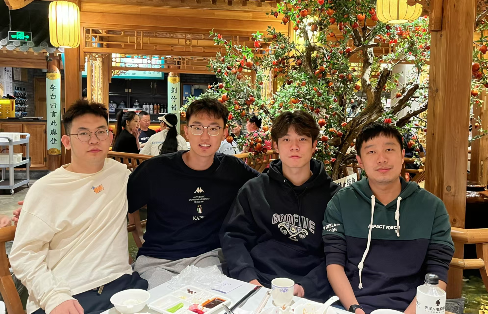
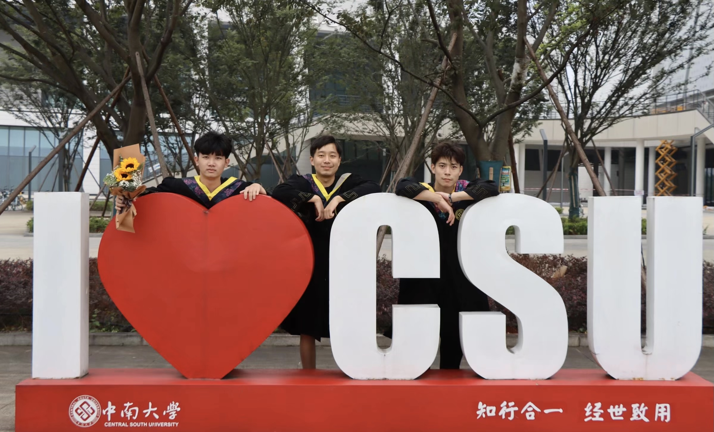
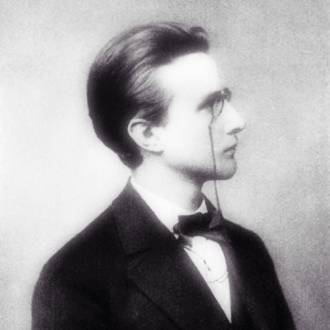
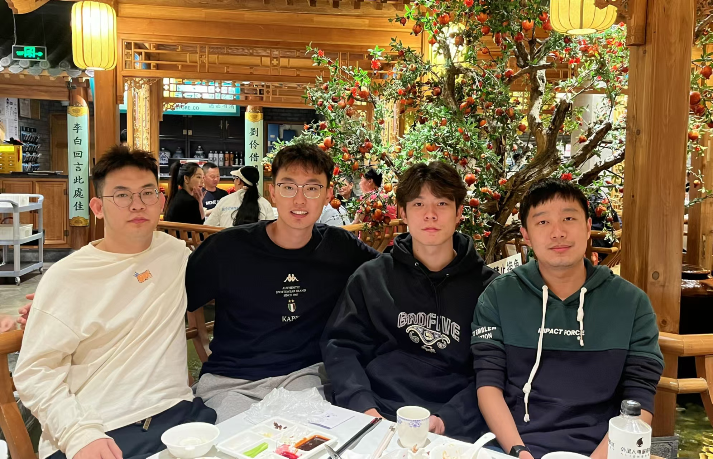
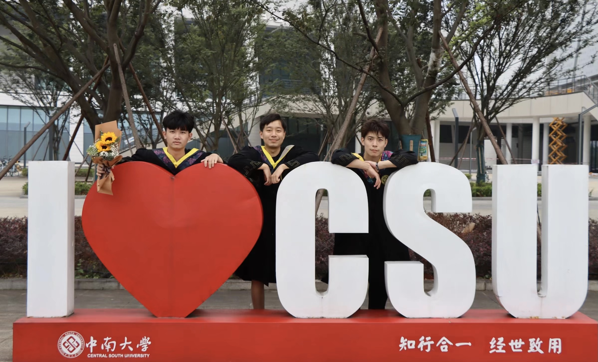
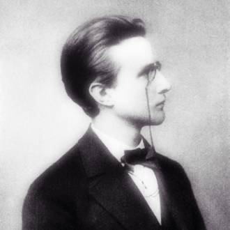

My name is Jun Yin. Currently, I am a Master Student in the Department of Computer Science at Central South University under the supervision of Professor Senzhang Wang. I received my Bachelor degree in Computer Science from Central South University in 2022. From 2022 to present, I study in BigData 4 Urban Intelligence Lab lead by Professor Senzhang Wang. From December 2022 to June 2023, I was a Remote Research Intern at Microsoft Research Asia supervised by Senoir Researcher Chaozhuo Li and focused on graph neural networks (GNN) explanation methods. From June 2023 to October 2023, I was a Dual Culture Student at National University of Defense Technology and focused on large model global ocean eddy-resolving forecasting. Now, I work as a Research Intern at Microsoft STCA, focusing on LLM-based generative recommender system.
My main research interests lie in
- Graph Neural Networks, GNN Explanation Methods, Interpretable GNNs
- Large Language Model, Recommender Systems
📖 Education
- 2022.09 - 2025.06, Master Student in Electronic and Information Engnieering, Central South University, China.
- 2018.09 - 2022.06, Bachelor Student in Computer Science, Central South University, China.
📝 Publication
Train Once and Explain Everywhere: Pre-training Interpretable Graph Neural Networks [CCF-A]
Jun Yin, Chaozhuo Li, Hao Yan, Jianxun Lian, Senzhang Wang.
V-InFoR: A Robust Graph Neural Networks Explainer for Structurally Corrupted Graphs [CCF-A]
Senzhang Wang, Jun Yin, Chaozhuo Li, Xing Xie, Jianxin Wang.
NeurIPS 2023A Comprehensive Study on Text-Attributed Graphs: Benchmarking and Rethinking, Hao Yan, Chaozhuo Li, Ruosong Long, Chao Yan, Jianan Zhao, Wenwen Zhuang, Jun Yin, Peiyan Zhang, Weihao Han, Hao Sun, Weiwei Deng, Qi Zhang, Lichao Sun, Xing Xie, Senzhang Wang. [CCF-A]ECML/PKDD 2023Hierarchical Graph Contrastive Learning, Hao Yan, Senzhang Wang, Jun Yin, Chaozhuo Li, Junxing Zhu, Jianxin Wang. [CCF-B]SDM 2023Adversarial Hard Negative Generation for Complementary Graph Contrastive Learning, Senzhang Wang, Hao Yan, Jinlong Du, Jun Yin, Junxing Zhu, Chaozhuo Li, Jianxin Wang. [CCF-B]
💻 Experience
- 2023.10 - 2025.02, Onsite Research Internship, Microsoft STCA, Beijing.
- 2023.06 - 2023.10, Dual Culture Student, National University of Defense Techology, Changsha, Hunan.
- 2022.12 - 2023.06, Remote Research Internship, Microsoft Research Asia, Beijing.
🔥 News
- 2024.10: 🎉 Acquire National Scholarship of CSU
- 2024.10: 🎉 Acquire First Academic Scholarship of CSU
- 2024.10: 🎉 Acquire Goodix Scholarship of CSU
- 2024.08: 😼 Serve as the reviewer of The WebConf 2025
- 2024.08: 😼 Serve as the reviewer of ICLR 2025
- 2023.09: 🎉 Two papers are accepted by NeurIPS 2023
🎖 Honor and Award
- 2024.10: National Scholarship of Central South University
- 2024.10: First Academic Scholarship of Central South University
- 2024.10: Goodix Scholarship of Central South University
- 2021.08: Third Prize in Hunan Province Aritificial Interlligence Challenge
☁️ After Research
 




